A data study of the large-company world: scale, geography, industry, ownership, capital, private markets, change over time, and the quality of the underlying data.
This is the analysis layer of the project: the measurements, the tables, the charts and the caveats. It is written so that it can be read as a reference and quoted from, and it deliberately contains no article prose. Every figure below is reproduced from the datasets listed in the appendix and can be regenerated with python data_analysis/build_report.py.
Reading the numbers. Revenue, profit, assets and market value are converted to US dollars. Market value is a point-in-time measure and is not additive with revenue; the two live on separate ledgers. Country is the domicile of the company, not the nationality of its owners, and several of the largest firms are domiciled in places that have no large domestic economy of their own.
| Firms in the Forbes Global 2000 | 2,000 |
| Firms in the reconciled universe | 15,175 |
| Rows before reconciliation | 17,985 |
| Rows where sources disagreed | 756 |
| Listed companies with a market value | 10,076 |
| Listed companies' market value | $150.5T |
| Private unicorns tracked | 1,442 |
| Unicorn paper valuation | $7.3T |
| Countries with at least one measured firm | 84 |
Three ledgers, not one. The Forbes list measures revenue. The listed universe measures market value. The unicorn board measures private paper valuation. They cover different companies and different years, so they must never be added together or compared as shares of a single pie.
How much revenue, profit, assets and workforce the reconciled universe of large firms actually represents, and how steeply that value is concentrated.
| Forbes Global 2000 firms | 2,000 |
| Combined revenue | $52.9T |
| Combined profit | $4.9T |
| Combined assets | $242.2T |
| Combined market value | $91.3T |
| Employees | 92,622,255 |
| Blended net margin | 9.2% |
| Firms that lose money | 128 |
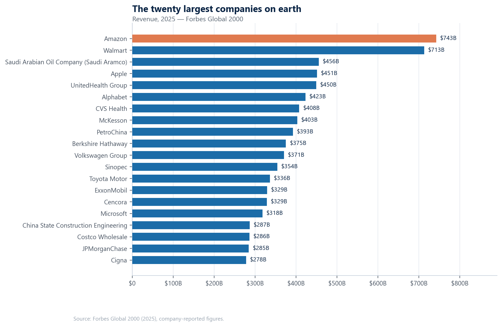
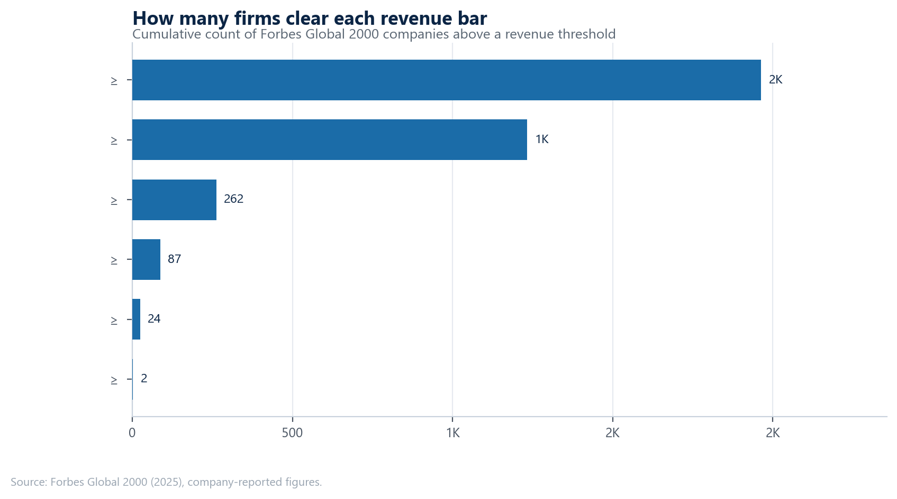
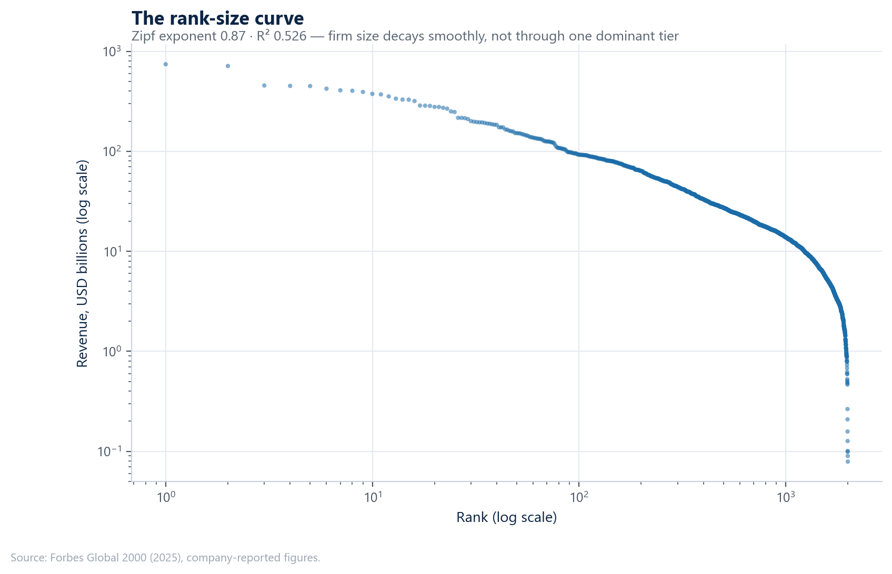
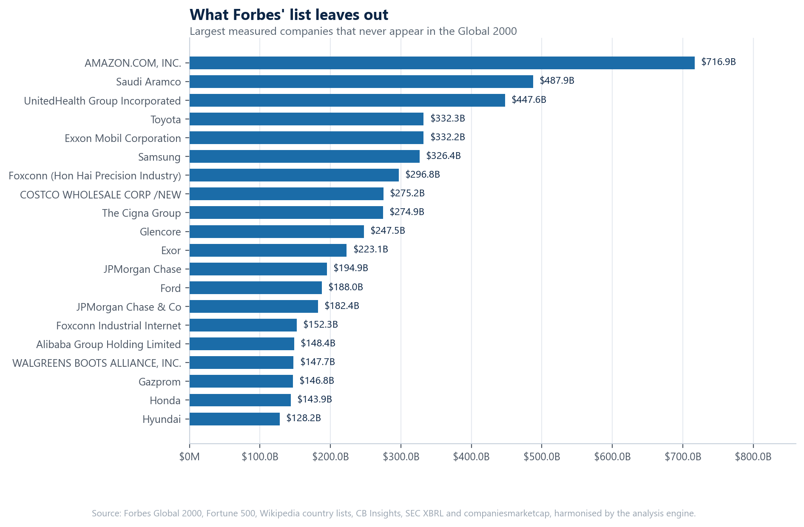
Firm counts above each revenue threshold
| threshold | firms |
|---|---|
| gt_1b | 1,967 |
| gt_10b | 1,210 |
| gt_50b | 242 |
| gt_100b | 83 |
| gt_250b | 20 |
| gt_500b | 2 |
_Full table: data/scale__thresholds.csv_ (6 rows, 2 columns)._
Largest firms that are not on Forbes' Global 2000 list
| company | country | revenue_musd | sector |
|---|---|---|---|
| AMAZON.COM, INC. | United States | $1M | Unclassified |
| Saudi Aramco | Saudi Arabia | $0M | Unclassified |
| UnitedHealth Group Incorporated | United States | $0M | Unclassified |
| Toyota | Japan | $0M | Unclassified |
| Exxon Mobil Corporation | United States | $0M | Unclassified |
| Samsung | South Korea | $0M | Unclassified |
| Foxconn (Hon Hai Precision Industry) | Taiwan | $0M | Unclassified |
| COSTCO WHOLESALE CORP /NEW | United States | $0M | Unclassified |
| The Cigna Group | United States | $0M | Unclassified |
| Glencore | Switzerland | $0M | Unclassified |
| JPMorgan Chase | United States | $0M | Unclassified |
| Bullish | Cayman Islands | $0M | Unclassified |
| Ford | United States | $0M | Unclassified |
| JPMorgan Chase & Co | United States | $0M | Unclassified |
| HOME DEPOT, INC. | United States | $0M | Unclassified |
_Full table: data/scale__top_beyond_forbes.csv_ (25 rows, 5 columns)._
How the measured corporate revenue and profit distribute across countries and regions, and how far that map deviates from a map of world GDP.
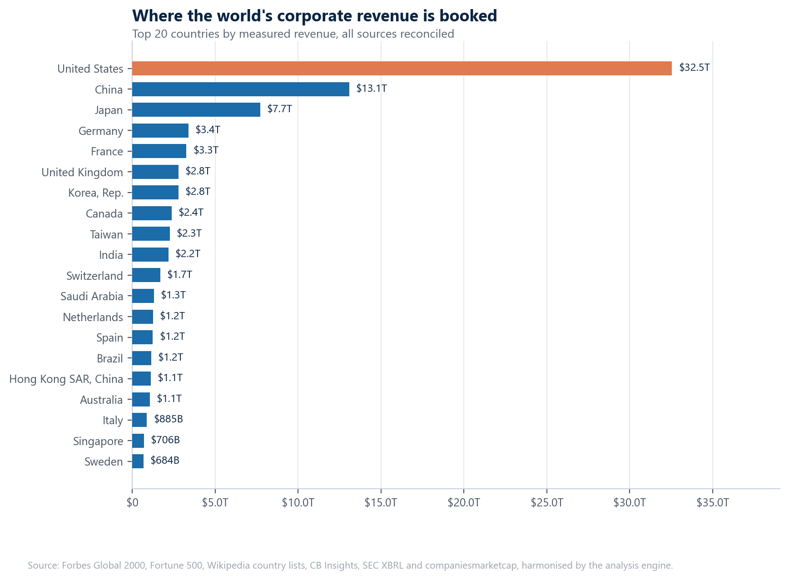
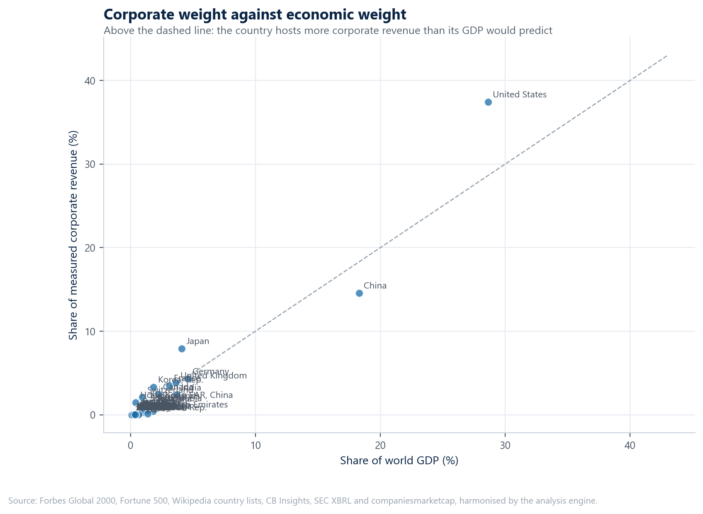
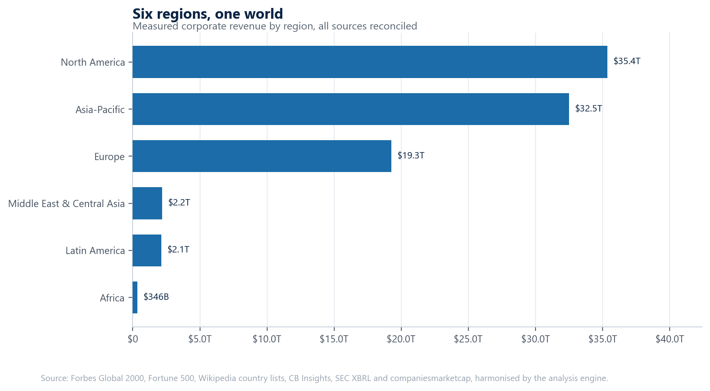
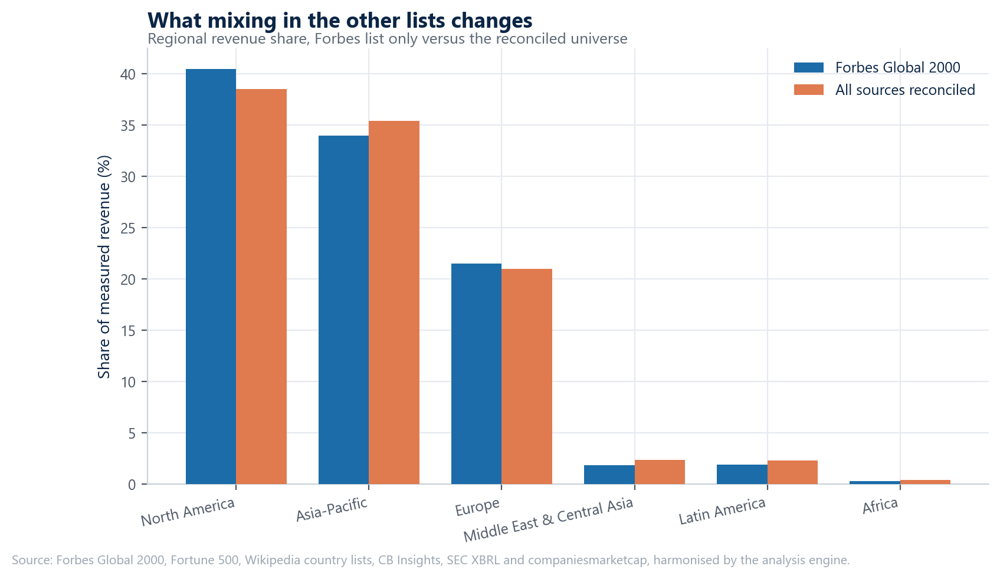
Regional rollup of the reconciled universe
| region | countries | companies | revenue_usd | profit_usd | market_cap_usd | employees | revenue_share | profit_margin | revenue_per_employee | countries_count |
|---|---|---|---|---|---|---|---|---|---|---|
| North America | 4 | 7,186 | $35.3T | $2.4T | $96.7T | 37,339,945 | 39.2% | 6.9% | 944,947 | 4.00 |
| Asia-Pacific | 15 | 3,731 | $31.6T | $1.8T | $38.8T | 35,619,054 | 35.1% | 5.6% | 888,499 | 15.00 |
| Europe | 35 | 2,824 | $18.6T | $1.0T | $24.3T | 24,843,553 | 20.7% | 5.6% | 749,604 | 35.00 |
| Middle East & Central Asia | 12 | 860 | $2.1T | $318B | $6.8T | 339,675 | 2.4% | 15.0% | 6,239,027 | 12.00 |
| Latin America | 12 | 249 | $2.1T | $100B | $2.2T | 2,730,027 | 2.3% | 4.8% | 769,149 | 12.00 |
| Africa | 6 | 88 | $315B | $22B | $427B | 342,689 | 0.4% | 7.1% | 920,215 | 6.00 |
_Full table: data/geography__regions_mixed.csv_ (6 rows, 11 columns)._
Largest country economies of the corporate world
| country | companies | revenue_usd | profit_usd | market_cap_usd | revenue_share | index_vs_gdp |
|---|---|---|---|---|---|---|
| United Arab Emirates | 135 | $254B | $47B | $1.2T | 0.3% | 0.54x |
| Argentina | 18 | $84B | $6B | $153B | 0.1% | 0.15x |
| Australia | 367 | $1.1T | $82B | $2.1T | 1.2% | 0.71x |
| Austria | 53 | $237B | $10B | $200B | 0.3% | 0.52x |
| Belgium | 84 | $286B | $17B | $402B | 0.3% | 0.50x |
| Bulgaria | 1 | $2B | $0 | $2B | 0.0% | 0.02x |
| Bahrain | 25 | $13B | $285M | $20B | 0.0% | 0.32x |
| Bahamas, The | 1 | $961M | $0 | $2B | 0.0% | 0.07x |
| Bermuda | 38 | $204B | $8B | $285B | 0.2% | 26.01x |
| Brazil | 129 | $1.2T | $68B | $1.2T | 1.3% | 0.62x |
| Canada | 462 | $2.5T | $171B | $4.8T | 2.7% | 1.27x |
| Switzerland | 221 | $1.7T | $121B | $3.0T | 1.9% | 2.06x |
| Chile | 27 | $180B | $4B | $170B | 0.2% | 0.64x |
| China | 823 | $12.8T | $736B | $11.7T | 14.2% | 0.80x |
| Colombia | 12 | $91B | $8B | $68B | 0.1% | 0.25x |
| Costa Rica | 1 | $211M | $0 | $2B | 0.0% | 0.00x |
| Cayman Islands | 12 | $215B | $1B | $109B | 0.2% | 32.53x |
| Cyprus | 4 | $7B | $550M | $5B | 0.0% | 0.22x |
| Czechia | 6 | $23B | $1B | $60B | 0.0% | 0.08x |
| Germany | 350 | $3.3T | $109B | $3.1T | 3.7% | 0.83x |
_Full table: data/geography__country_mixed.csv_ (84 rows, 18 columns)._
Countries over- and under-indexed against their own GDP
| country | companies | revenue_usd | gdp_usd | revenue_share | gdp_share | index_vs_gdp |
|---|---|---|---|---|---|---|
| Hong Kong SAR, China | 42 | $886B | $408B | 1.7% | 0.004 | 4.17x |
| Luxembourg | 4 | $109B | $93B | 0.2% | 0.001 | 2.25x |
| Switzerland | 45 | $1.1T | $970B | 2.1% | 0.010 | 2.23x |
| Japan | 180 | $4.2T | $4.2T | 8.0% | 0.041 | 1.94x |
| Korea, Rep. | 62 | $1.7T | $1.9T | 3.2% | 0.018 | 1.73x |
| Ireland | 25 | $457B | $609B | 0.9% | 0.006 | 1.44x |
| United States | 612 | $19.5T | $29.3T | 36.9% | 0.288 | 1.28x |
| France | 47 | $2.0T | $3.2T | 3.8% | 0.031 | 1.23x |
| Sweden | 27 | $360B | $605B | 0.7% | 0.006 | 1.14x |
| Canada | 60 | $1.3T | $2.3T | 2.5% | 0.022 | 1.12x |
| United Kingdom | 68 | $2.1T | $3.7T | 4.0% | 0.036 | 1.11x |
| Saudi Arabia | 19 | $624B | $1.3T | 1.2% | 0.012 | 0.96x |
| Denmark | 13 | $209B | $425B | 0.4% | 0.004 | 0.95x |
| Thailand | 16 | $259B | $529B | 0.5% | 0.005 | 0.94x |
| Germany | 49 | $2.3T | $4.7T | 4.3% | 0.046 | 0.93x |
| Finland | 10 | $143B | $299B | 0.3% | 0.003 | 0.92x |
| Netherlands | 24 | $559B | $1.2T | 1.1% | 0.012 | 0.88x |
| China | 275 | $7.8T | $18.7T | 14.8% | 0.184 | 0.80x |
| Singapore | 11 | $236B | $573B | 0.4% | 0.006 | 0.79x |
| Spain | 18 | $624B | $1.7T | 1.2% | 0.017 | 0.70x |
_Full table: data/geography__over_under.csv_ (55 rows, 7 columns)._
Which sectors carry the revenue, which carry the profit, and how wide the margin distributions are inside each sector.
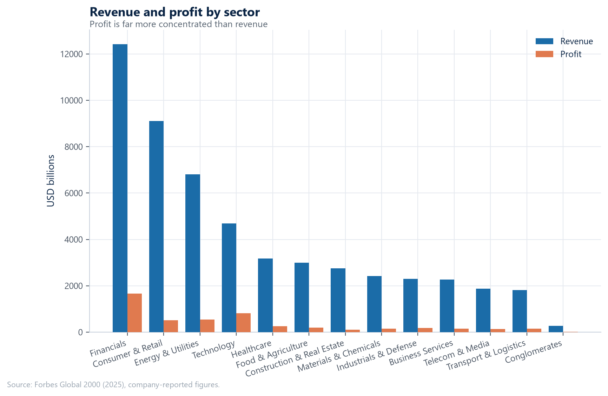
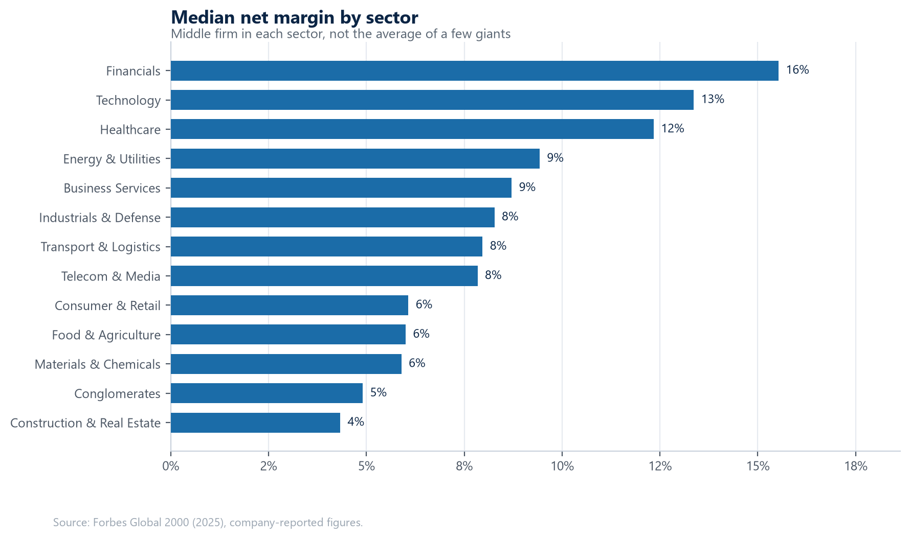
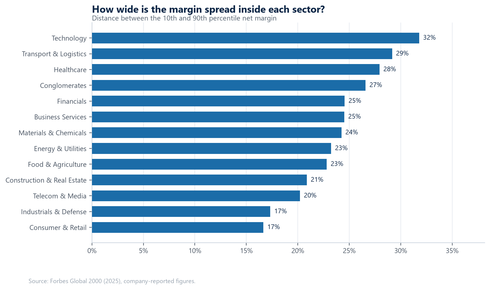
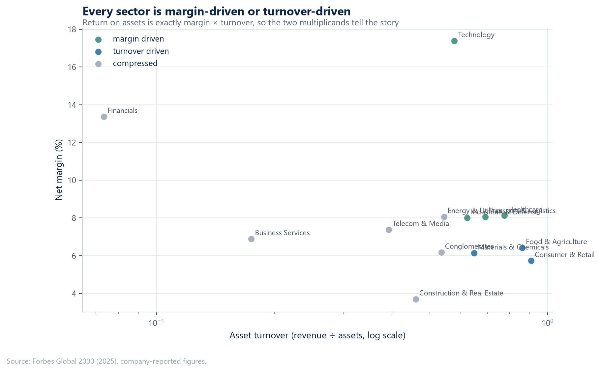
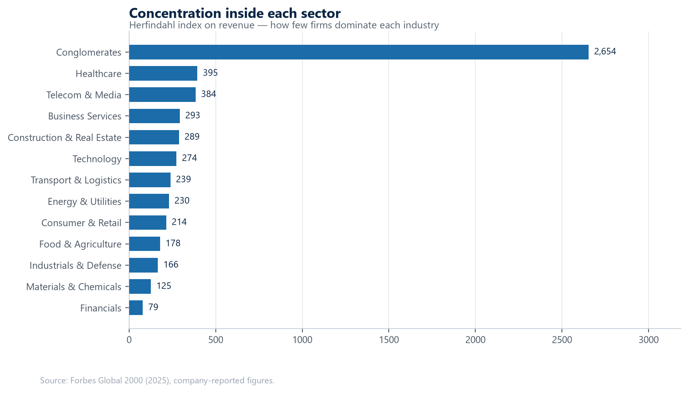
Sector scoreboard
| sector | companies | revenue_usd | profit_usd | assets_usd | market_cap_usd | employees | profit_margin | roa | asset_turnover | revenue_per_employee | profit_per_employee | market_cap_to_revenue | market_cap_to_profit | revenue_share | profit_share | roa_check |
|---|---|---|---|---|---|---|---|---|---|---|---|---|---|---|---|---|
| Financials | 578 | $12.4T | $1.7T | $169.6T | $18.8T | 14,973,295 | 13.4% | 0.010 | 0.073 | 829,866 | 110,959 | 1.51x | 11.32x | 23.5% | 34.0% | 0.010 |
| Consumer & Retail | 217 | $9.1T | $522B | $10.0T | $11.9T | 23,633,502 | 5.7% | 0.052 | 0.907 | 385,268 | 22,079 | 1.31x | 22.79x | 17.2% | 10.7% | 0.052 |
| Energy & Utilities | 188 | $6.8T | $550B | $12.5T | $7.9T | 4,568,861 | 8.1% | 0.044 | 0.543 | 1,491,365 | 120,292 | 1.16x | 14.38x | 12.9% | 11.2% | 0.044 |
| Technology | 184 | $4.7T | $815B | $8.1T | $24.5T | 9,309,972 | 17.4% | 0.100 | 0.577 | 503,660 | 87,578 | 5.22x | 30.00x | 8.9% | 16.7% | 0.100 |
| Healthcare | 105 | $3.2T | $258B | $4.1T | $7.0T | 4,757,709 | 8.1% | 0.063 | 0.775 | 668,574 | 54,310 | 2.21x | 27.23x | 6.0% | 5.3% | 0.063 |
| Food & Agriculture | 111 | $3.0T | $193B | $3.5T | $3.9T | 7,096,733 | 6.4% | 0.055 | 0.861 | 422,743 | 27,140 | 1.30x | 20.27x | 5.7% | 3.9% | 0.055 |
| Construction & Real Estate | 111 | $2.7T | $102B | $6.0T | $1.7T | 5,869,056 | 3.7% | 0.017 | 0.460 | 468,143 | 17,316 | 0.63x | 16.91x | 5.2% | 2.1% | 0.017 |
| Materials & Chemicals | 131 | $2.4T | $149B | $3.7T | $2.9T | 3,934,520 | 6.1% | 0.040 | 0.648 | 616,526 | 37,810 | 1.19x | 19.35x | 4.6% | 3.0% | 0.040 |
| Industrials & Defense | 108 | $2.3T | $184B | $3.7T | $4.8T | 5,782,994 | 8.0% | 0.050 | 0.623 | 397,275 | 31,782 | 2.11x | 26.34x | 4.3% | 3.8% | 0.050 |
| Business Services | 110 | $2.3T | $156B | $13.0T | $2.8T | 3,671,649 | 6.9% | 0.012 | 0.175 | 617,366 | 42,561 | 1.23x | 17.91x | 4.3% | 3.2% | 0.012 |
| Telecom & Media | 63 | $1.9T | $138B | $4.8T | $2.7T | 4,173,903 | 7.4% | 0.029 | 0.392 | 448,351 | 33,091 | 1.46x | 19.80x | 3.5% | 2.8% | 0.029 |
| Transport & Logistics | 84 | $1.8T | $146B | $2.6T | $1.9T | 4,601,184 | 8.1% | 0.056 | 0.693 | 393,900 | 31,761 | 1.03x | 12.83x | 3.4% | 3.0% | 0.056 |
| Conglomerates | 8 | $268B | $17B | $502B | $429B | 248,668 | 6.2% | 0.033 | 0.535 | 1,079,753 | 66,689 | 1.60x | 25.86x | 0.5% | 0.3% | 0.033 |
_Full table: data/industry__sectors.csv_ (13 rows, 17 columns)._
Spread of net margins inside each sector
| sector | firms | mean | median | p10 | p90 | std | iqr | cv | loss_makers | loss_rate |
|---|---|---|---|---|---|---|---|---|---|---|
| Business Services | 110 | 10.82 | 8.71 | 0.503 | 25.03 | 11.58 | 24.53 | 1.07 | 6.00 | 5.5% |
| Conglomerates | 8 | 10.80 | 4.91 | -1.40 | 25.18 | 14.80 | 26.59 | 1.37 | 2.00 | 25.0% |
| Construction & Real Estate | 109 | 6.22 | 4.33 | -0.513 | 20.37 | 15.65 | 20.88 | 2.52 | 13.00 | 11.9% |
| Consumer & Retail | 217 | 7.53 | 6.07 | 0.607 | 17.27 | 7.84 | 16.66 | 1.04 | 12.00 | 5.5% |
| Energy & Utilities | 186 | 11.37 | 9.43 | 1.09 | 24.33 | 10.31 | 23.24 | 0.907 | 12.00 | 6.5% |
| Financials | 569 | 16.63 | 15.53 | 4.43 | 28.99 | 12.11 | 24.56 | 0.728 | 11.00 | 1.9% |
| Food & Agriculture | 110 | 9.77 | 6.00 | 1.04 | 23.86 | 12.03 | 22.82 | 1.23 | 5.00 | 4.5% |
| Healthcare | 104 | 13.21 | 12.34 | 0.158 | 28.10 | 12.63 | 27.94 | 0.956 | 10.00 | 9.6% |
| Industrials & Defense | 108 | 10.05 | 8.27 | 1.92 | 19.26 | 7.35 | 17.34 | 0.731 | 4.00 | 3.7% |
| Materials & Chemicals | 131 | 8.14 | 5.90 | -1.88 | 22.37 | 11.93 | 24.25 | 1.47 | 19.00 | 14.5% |
| Technology | 183 | 13.78 | 13.36 | 0.572 | 32.37 | 17.62 | 31.80 | 1.28 | 16.00 | 8.7% |
| Telecom & Media | 62 | 7.81 | 7.84 | -2.78 | 17.44 | 14.77 | 20.22 | 1.89 | 14.00 | 22.6% |
| Transport & Logistics | 84 | 13.60 | 7.97 | 0.887 | 30.06 | 12.99 | 29.17 | 0.955 | 2.00 | 2.4% |
_Full table: data/industry__margin_dispersion.csv_ (13 rows, 11 columns)._
How concentrated each sector is
| sector | firms | hhi | top5_share | gini |
|---|---|---|---|---|
| Conglomerates | 8 | 2,654 | 0.881 | 0.467 |
| Healthcare | 105 | 394.52 | 0.384 | 0.639 |
| Telecom & Media | 63 | 384.06 | 0.348 | 0.550 |
| Business Services | 110 | 292.76 | 0.304 | 0.548 |
| Construction & Real Estate | 111 | 288.56 | 0.292 | 0.529 |
| Technology | 184 | 273.72 | 0.309 | 0.651 |
| Transport & Logistics | 84 | 238.91 | 0.237 | 0.484 |
| Energy & Utilities | 188 | 230.46 | 0.276 | 0.628 |
| Consumer & Retail | 217 | 214.21 | 0.258 | 0.616 |
| Food & Agriculture | 111 | 178.46 | 0.179 | 0.481 |
| Industrials & Defense | 108 | 166.12 | 0.167 | 0.454 |
| Materials & Chemicals | 131 | 125.50 | 0.140 | 0.395 |
| Financials | 578 | 79.04 | 0.123 | 0.667 |
_Full table: data/industry__sector_concentration.csv_ (13 rows, 5 columns)._
State, listed, private, mutual and subsidiary capital, and the large firms that no ranking list puts on the page.
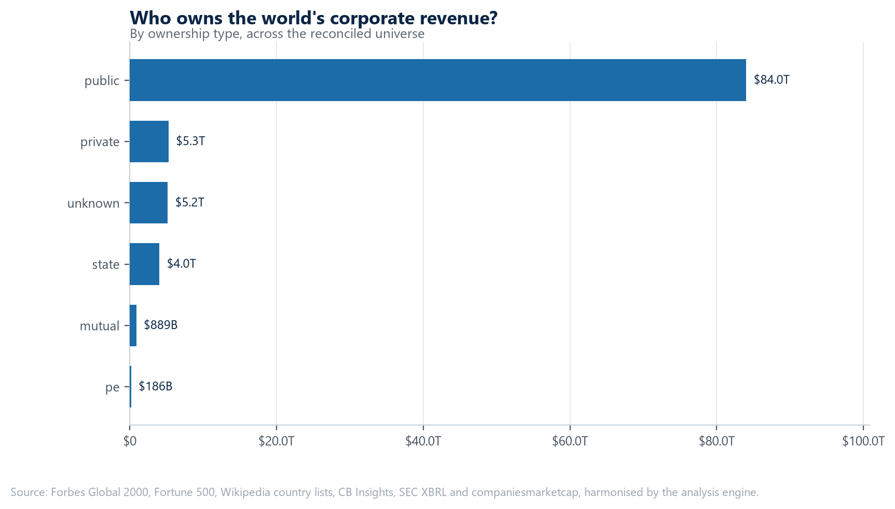
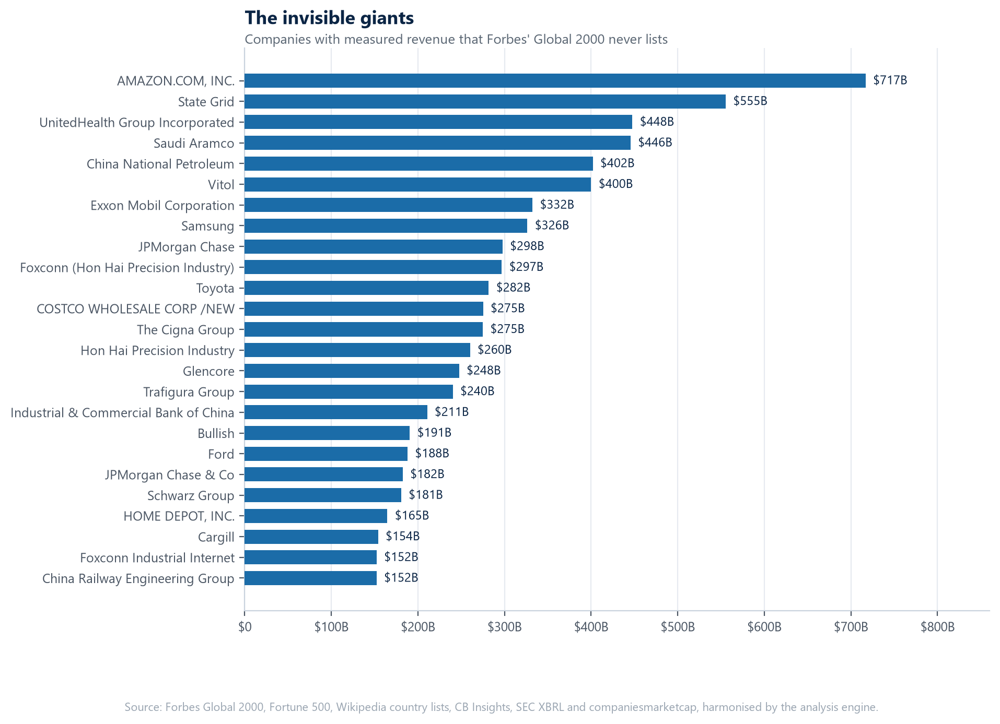
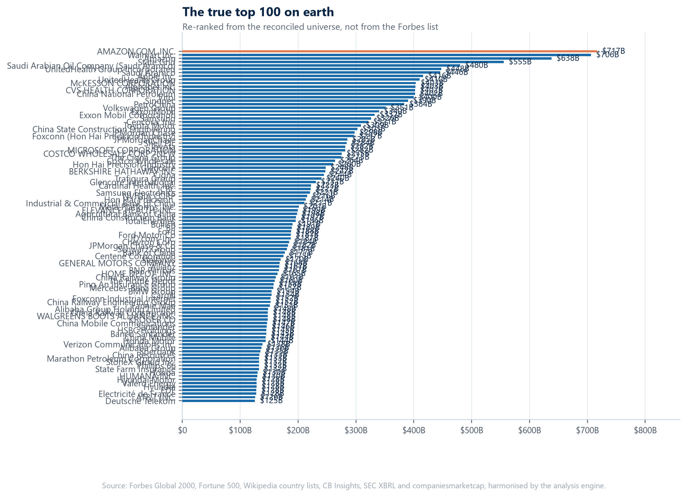
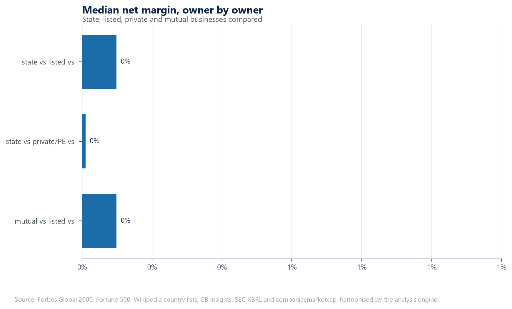
Ownership split of the reconciled universe
| ownership | companies | revenue_usd | profit_usd | market_cap_usd | employees | profit_margin | revenue_per_employee | revenue_share | profit_share |
|---|---|---|---|---|---|---|---|---|---|
| state | 56 | $4.0T | $146B | $268B | 779,034 | 3.6% | 5,192,824 | 4.1% | 2.4% |
| mutual | 15 | $889B | $49B | $0 | 77,283 | 5.5% | 11,496,728 | 0.9% | 0.8% |
| pe | 1,442 | $186B | $1B | $59B | 187,379 | 0.6% | 992,646 | 0.2% | 0.0% |
| public | 13,000 | $84.0T | $5.6T | $169.2T | 94,680,269 | 6.7% | 887,488 | 84.4% | 92.9% |
| private | 338 | $5.3T | $82B | $37B | 3,753,747 | 1.6% | 1,407,979 | 5.3% | 1.4% |
| unknown | 324 | $5.2T | $148B | $1.3T | 2,005,226 | 2.9% | 2,580,596 | 5.2% | 2.5% |
_Full table: data/ownership__ownership_mixed.csv_ (6 rows, 10 columns)._
The true top 100 once every source is reconciled
| company | country | ownership | sector | revenue_usd | forbes_rank |
|---|---|---|---|---|---|
| AMAZON.COM, INC. | United States | public | Unclassified | $717B | — |
| Walmart Inc. | United States | public | Unclassified | $706B | 18 |
| Amazon | United States | public | Consumer & Retail | $638B | 5 |
| State Grid | — | state | Unclassified | $555B | — |
| Saudi Arabian Oil Company (Saudi Aramco) | Saudi Arabia | public | Energy & Utilities | $480B | 4 |
| UnitedHealth Group Incorporated | United States | public | Unclassified | $448B | — |
| Saudi Aramco | Saudi Arabia | public | Unclassified | $446B | — |
| Apple Inc. | United States | public | Unclassified | $416B | 11 |
| UnitedHealth Group | United States | public | Financials | $410B | 17 |
| McKESSON CORPORATION | United States | public | Unclassified | $403B | 195 |
| Alphabet Inc. | United States | public | Unclassified | $403B | 9 |
| CVS HEALTH CORPORATION | United States | public | Unclassified | $402B | 74 |
| China National Petroleum | — | state | Unclassified | $402B | — |
| Vitol | World (private) | unknown | Unclassified | $400B | — |
| Sinopec | China | public | Energy & Utilities | $390B | 51 |
| PetroChina | China | public | Energy & Utilities | $384B | 28 |
| Volkswagen Group | Germany | public | Consumer & Retail | $351B | 54 |
| ExxonMobil | United States | public | Energy & Utilities | $340B | 13 |
| Exxon Mobil Corporation | United States | public | Unclassified | $332B | — |
| Samsung | South Korea | public | Unclassified | $326B | — |
| Cencora, Inc. | United States | public | Unclassified | $321B | 287 |
| Toyota Motor | Japan | public | Consumer & Retail | $309B | 14 |
| China State Construction Engineering | China | public | Construction & Real Estate | $303B | 136 |
| JPMorgan Chase | United States | public | Unclassified | $298B | — |
| Foxconn (Hon Hai Precision Industry) | Taiwan | public | Unclassified | $297B | — |
_Full table: data/ownership__true_top100.csv_ (100 rows, 50 columns)._
The invisible giants, by country
| country | firms | revenue_usd |
|---|---|---|
| United States | 4,876 | $12.9T |
| China | 366 | $4.7T |
| World (private) | 78 | $3.5T |
| Japan | 765 | $3.3T |
| Europe | 35 | $2.8T |
| Taiwan | 89 | $1.2T |
| Canada | 329 | $1.1T |
| South Korea | 130 | $989B |
| Germany | 256 | $976B |
| France | 238 | $955B |
| India | 508 | $866B |
| Saudi Arabia | 214 | $695B |
| United Kingdom | 376 | $618B |
| Brazil | 81 | $519B |
| Australia | 302 | $493B |
_Full table: data/ownership__invisible_by_country.csv_ (82 rows, 3 columns)._
The listed universe: market value, sector multiples, the gap between where profit sits and where valuation sits, and how deep each national equity market is against its GDP.
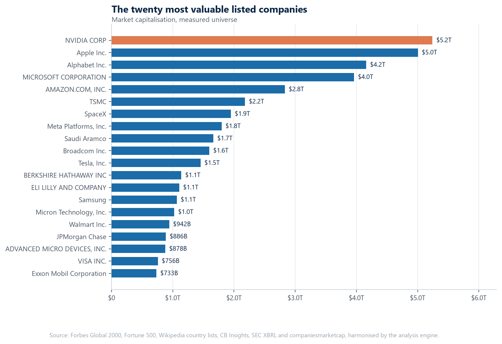
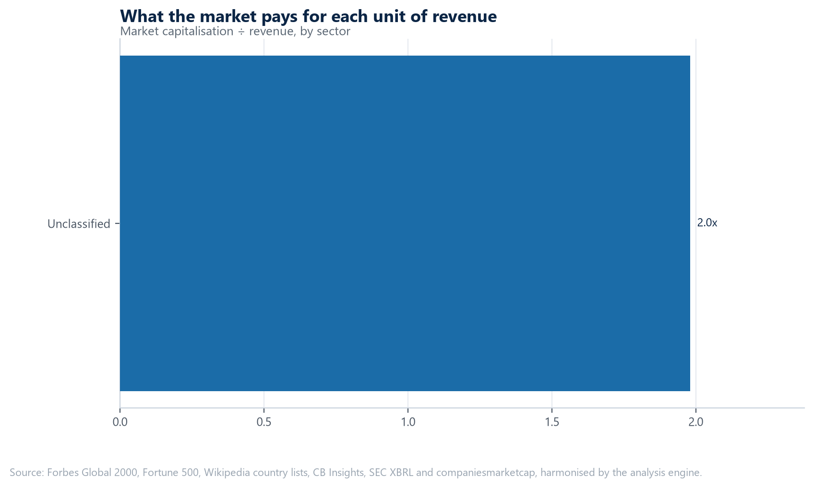
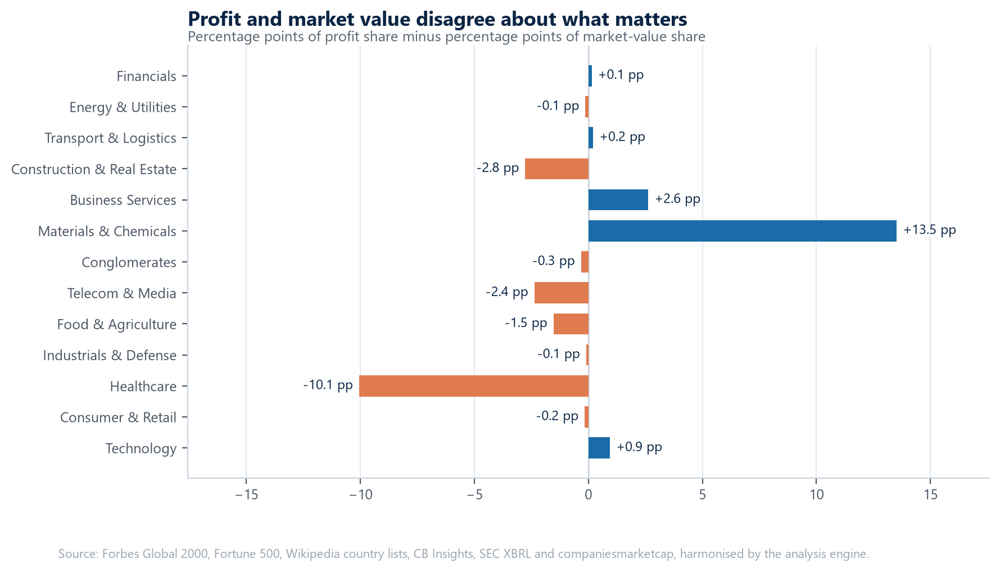
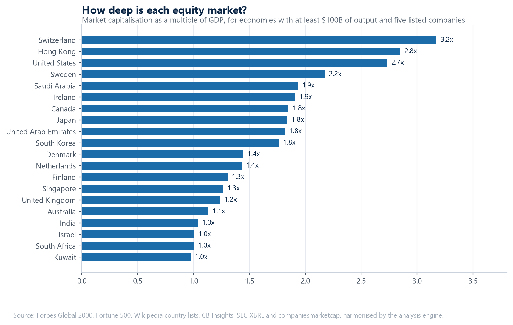
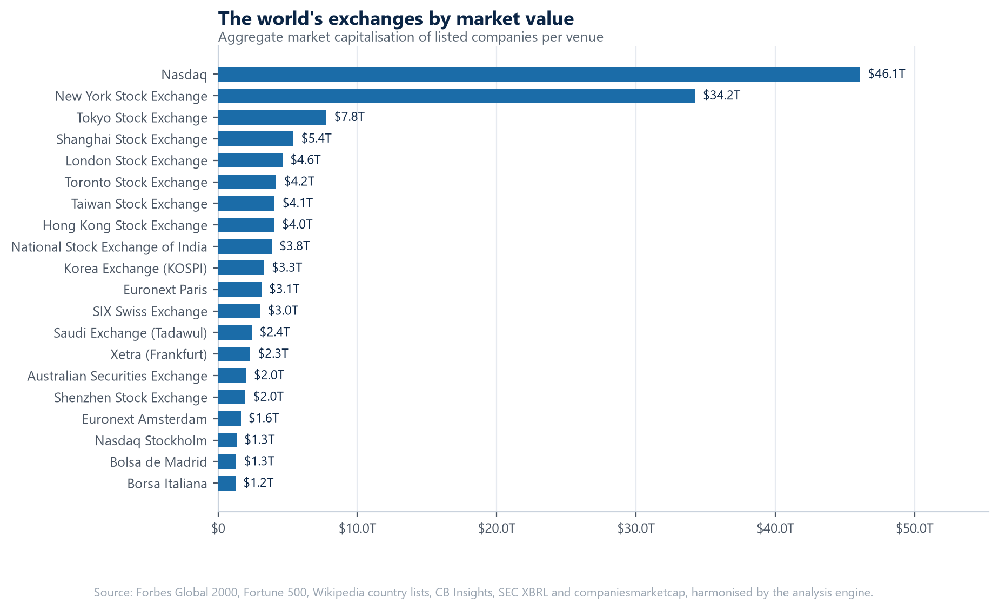
Profit share against market-value share, by sector
| sector | revenue | profit | market_cap | profit_share | market_cap_share | profit_minus_mcap_pp | market_cap_to_profit |
|---|---|---|---|---|---|---|---|
| Business Services | $2.3T | $156B | $2.8T | 3.2% | 3.1% | 0.143 | 17.91x |
| Conglomerates | $268B | $17B | $429B | 0.3% | 0.5% | -0.129 | 25.86x |
| Construction & Real Estate | $2.7T | $102B | $1.7T | 2.1% | 1.9% | 0.204 | 16.91x |
| Consumer & Retail | $9.1T | $500B | $11.9T | 10.3% | 13.0% | -2.77 | 23.80x |
| Energy & Utilities | $6.8T | $550B | $7.9T | 11.3% | 8.7% | 2.62 | 14.38x |
| Financials | $12.4T | $1.7T | $18.8T | 34.1% | 20.6% | 13.52 | 11.32x |
| Food & Agriculture | $3.0T | $193B | $3.9T | 4.0% | 4.3% | -0.323 | 20.27x |
| Healthcare | $3.2T | $260B | $7.0T | 5.3% | 7.7% | -2.37 | 27.06x |
| Industrials & Defense | $2.3T | $184B | $4.8T | 3.8% | 5.3% | -1.53 | 26.34x |
| Materials & Chemicals | $2.4T | $149B | $2.9T | 3.1% | 3.2% | -0.099 | 19.35x |
| Technology | $4.7T | $815B | $24.5T | 16.7% | 26.8% | -10.05 | 30.00x |
| Telecom & Media | $1.9T | $138B | $2.7T | 2.8% | 3.0% | -0.161 | 19.80x |
| Transport & Logistics | $1.8T | $146B | $1.9T | 3.0% | 2.1% | 0.946 | 12.83x |
_Full table: data/capital__profit_pool.csv_ (13 rows, 8 columns)._
Equity-market depth against GDP
| country | market_cap | companies | iso3 | gdp | mcap_to_gdp |
|---|---|---|---|---|---|
| Argentina | $149B | 16 | ARG | 638,365,455,340 | 0.23x |
| Australia | $2.0T | 348 | AUS | 1,757,022,451,653 | 1.13x |
| Austria | $249B | 50 | AUT | 534,790,720,467 | 0.47x |
| Bahamas | $2B | 1 | BHS | 15,832,800,000 | 0.15x |
| Bahrain | $19B | 24 | BHR | 47,210,732,713 | 0.40x |
| Belgium | $461B | 75 | BEL | 670,983,130,619 | 0.69x |
| Bermuda | $285B | 37 | BMU | 9,194,499,000 | 31.02x |
| Brazil | $1.1T | 91 | BRA | 2,185,821,610,689 | 0.52x |
| Bulgaria | $2B | 1 | BGR | 113,349,149,167 | 0.02x |
| Cambodia | $6B | 6 | KHM | 46,352,647,037 | 0.12x |
| Canada | $4.2T | 412 | CAN | 2,270,076,189,683 | 1.85x |
| Cayman Islands | $23B | 9 | CYM | 7,765,336,505 | 3.00x |
| Chile | $169B | 24 | CHL | 329,260,633,699 | 0.51x |
| China | $10.9T | 452 | CHN | 18,729,668,435,848 | 0.58x |
| Colombia | $66B | 4 | COL | 420,504,033,143 | 0.16x |
| Costa Rica | $2B | 1 | CRI | 96,715,644,331 | 0.02x |
| Cyprus | $3B | 3 | CYP | 37,634,551,821 | 0.07x |
| Czech Republic | $67B | 5 | CZE | 347,082,562,221 | 0.19x |
| Denmark | $613B | 58 | DNK | 424,524,722,037 | 1.44x |
| Egypt | $8B | 2 | EGY | 389,059,910,593 | 0.02x |
_Full table: data/capital__financial_depth.csv_ (74 rows, 6 columns)._
Largest listed companies by market value
| company | country | sector | market_cap_usd | revenue_usd | revenue_basis |
|---|---|---|---|---|---|
| NVIDIA CORP | United States | Unclassified | $5.2T | $216B | sec_filing |
| Apple Inc. | United States | Unclassified | $5.0T | $416B | sec_filing |
| Alphabet Inc. | United States | Unclassified | $4.2T | $403B | sec_filing |
| MICROSOFT CORPORATION | United States | Unclassified | $4.0T | $282B | sec_filing |
| AMAZON.COM, INC. | United States | Unclassified | $2.8T | $717B | sec_filing |
| TSMC | Taiwan | Unclassified | $2.2T | $122B | estimate |
| SpaceX | United States | Unclassified | $1.9T | $21B | estimate |
| Meta Platforms, Inc. | United States | Unclassified | $1.8T | $201B | sec_filing |
| Saudi Aramco | Saudi Arabia | Unclassified | $1.7T | $488B | estimate |
| Broadcom Inc. | United States | Unclassified | $1.6T | $64B | sec_filing |
| Tesla, Inc. | United States | Unclassified | $1.5T | $95B | sec_filing |
| BERKSHIRE HATHAWAY INC | United States | Unclassified | $1.1T | $247B | sec_filing |
| ELI LILLY AND COMPANY | United States | Unclassified | $1.1T | $65B | sec_filing |
| Samsung | South Korea | Unclassified | $1.1T | $326B | estimate |
| Micron Technology, Inc. | United States | Unclassified | $1.0T | $37B | sec_filing |
| Walmart Inc. | United States | Unclassified | $942B | $706B | sec_filing |
| JPMorgan Chase | United States | Unclassified | $886B | $195B | estimate |
| ADVANCED MICRO DEVICES, INC. | United States | Unclassified | $878B | $35B | sec_filing |
| VISA INC. | United States | Unclassified | $756B | $40B | sec_filing |
| Exxon Mobil Corporation | United States | Unclassified | $733B | $332B | sec_filing |
_Full table: data/capital__top_listed.csv_ (100 rows, 6 columns)._
Exchanges by total market capitalisation
| exchange | exchange_country | city | companies | total_market_cap_usd | top10_market_cap_usd | top_company | top_company_mcap | top10_share | avg_company_cap | share_of_listed_total |
|---|---|---|---|---|---|---|---|---|---|---|
| Nasdaq | United States | New York | 1,618 | 46,088,902,094,592 | 29,020,750,348,288 | NVIDIA | 5,242,072,072,192 | 0.630 | 28,485,106,363 | 0.310 |
| New York Stock Exchange | United States | New York | 1,467 | 34,246,917,347,336 | 7,113,332,031,488 | Berkshire Hathaway | 1,139,349,913,600 | 0.208 | 23,344,865,267 | 0.231 |
| Tokyo Stock Exchange | Japan | Tokyo | 903 | 7,783,181,610,177 | 1,737,222,659,993 | Mitsubishi UFJ Financial | 243,799,867,392 | 0.223 | 8,619,248,738 | 0.052 |
| Shanghai Stock Exchange | China | Shanghai | 161 | 5,408,467,235,248 | 2,590,799,492,090 | China Construction Bank | 453,087,654,798 | 0.479 | 33,592,964,194 | 0.036 |
| London Stock Exchange | United Kingdom | London | 464 | 4,627,480,057,176 | 2,030,761,233,186 | HSBC | 317,922,148,352 | 0.439 | 9,973,017,365 | 0.031 |
| Toronto Stock Exchange | Canada | Toronto | 394 | 4,179,009,403,170 | 1,419,000,881,152 | Royal Bank Of Canada | 271,763,570,688 | 0.340 | 10,606,622,851 | 0.028 |
| Taiwan Stock Exchange | Taiwan | Taipei | 95 | 4,064,892,788,273 | 3,010,547,458,829 | TSMC | 2,179,460,104,192 | 0.741 | 42,788,345,140 | 0.027 |
| Hong Kong Stock Exchange | Hong Kong | Hong Kong | 306 | 4,042,164,209,895 | 1,756,005,217,840 | ICBC | 344,722,949,059 | 0.434 | 13,209,686,960 | 0.027 |
| National Stock Exchange of India | India | Mumbai | 564 | 3,840,860,095,017 | 919,206,604,314 | Reliance Industries | 171,374,723,672 | 0.239 | 6,810,035,629 | 0.026 |
| Korea Exchange (KOSPI) | South Korea | Seoul | 159 | 3,299,137,193,755 | 2,176,987,629,173 | Samsung | 1,065,509,204,255 | 0.660 | 20,749,290,527 | 0.022 |
| Euronext Paris | France | Paris | 289 | 3,103,366,038,000 | 1,621,869,031,789 | L'Oréal | 241,027,846,057 | 0.523 | 10,738,290,789 | 0.021 |
| SIX Swiss Exchange | Switzerland | Zurich | 208 | 3,021,070,705,799 | 1,743,615,658,654 | Roche | 371,736,693,530 | 0.577 | 14,524,378,393 | 0.020 |
| Saudi Exchange (Tadawul) | Saudi Arabia | Riyadh | 229 | 2,423,015,923,980 | 2,065,452,021,314 | Saudi Aramco | 1,663,347,115,141 | 0.852 | 10,580,855,563 | 0.016 |
| Xetra (Frankfurt) | Germany | Frankfurt | 199 | 2,302,082,736,375 | 1,225,632,017,825 | SAP | 260,884,791,296 | 0.532 | 11,568,254,957 | 0.016 |
| Australian Securities Exchange | Australia | Sydney | 353 | 2,013,010,425,078 | 938,628,334,728 | BHP Group | 211,501,711,360 | 0.466 | 5,702,579,108 | 0.014 |
| Shenzhen Stock Exchange | China | Shenzhen | 116 | 1,961,934,069,762 | 826,561,085,547 | CATL | 185,256,494,218 | 0.421 | 16,913,224,739 | 0.013 |
| Euronext Amsterdam | Netherlands | Amsterdam | 62 | 1,625,236,458,531 | 1,215,050,727,548 | ASML | 634,829,275,136 | 0.748 | 26,213,491,267 | 0.011 |
| Nasdaq Stockholm | Sweden | Stockholm | 199 | 1,324,461,064,239 | 632,997,669,138 | Investor AB | 130,090,831,167 | 0.478 | 6,655,583,237 | 0.009 |
| Bolsa de Madrid | Spain | Madrid | 100 | 1,302,846,519,578 | 965,085,397,562 | Inditex | 193,644,196,795 | 0.741 | 13,028,465,196 | 0.009 |
| Borsa Italiana | Italy | Milan | 148 | 1,242,264,872,232 | 715,719,828,181 | UniCredit | 126,128,010,373 | 0.576 | 8,393,681,569 | 0.008 |
_Full table: data/capital__exchanges.csv_ (60 rows, 11 columns)._
The private half of the economy: unicorn valuations, the largest unlisted operating companies, and the frontier-lab landscape.
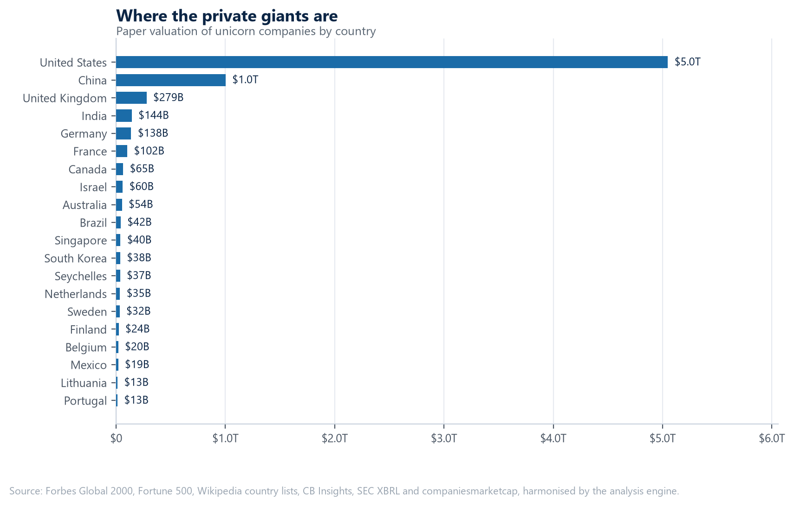
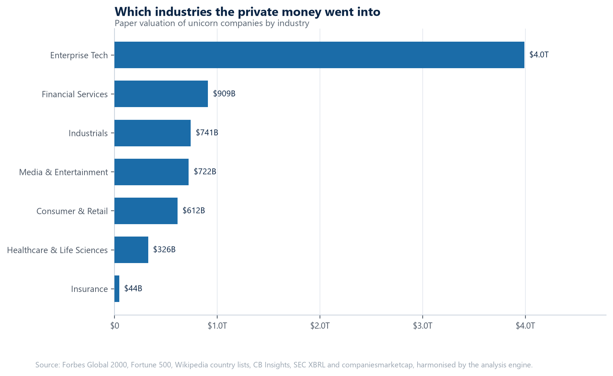
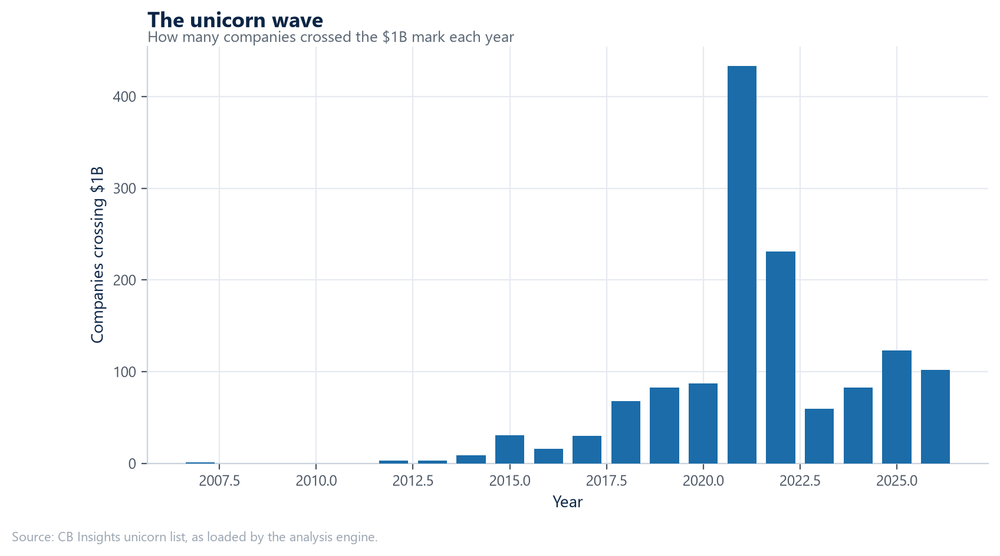
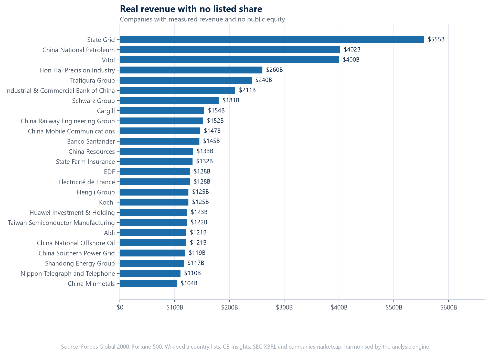
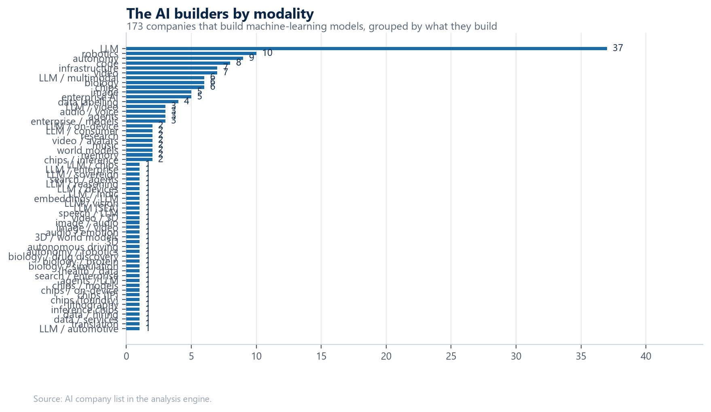
Unicorns by country
| country | region | companies | valuation_usd |
|---|---|---|---|
| United States | North America | 825 | $5.0T |
| China | Asia-Pacific | 170 | $1.0T |
| United Kingdom | Europe | 73 | $279B |
| India | Asia-Pacific | 63 | $144B |
| Germany | Europe | 39 | $138B |
| France | Europe | 31 | $102B |
| Canada | North America | 23 | $65B |
| Israel | Middle East & Central Asia | 26 | $60B |
| Australia | Asia-Pacific | 9 | $54B |
| Brazil | Latin America | 20 | $42B |
| Singapore | Asia-Pacific | 17 | $40B |
| South Korea | Asia-Pacific | 16 | $38B |
| Seychelles | Africa | 3 | $37B |
| Netherlands | Europe | 13 | $35B |
| Sweden | Europe | 7 | $32B |
_Full table: data/private_capital__unicorns_by_country.csv_ (55 rows, 4 columns)._
Unicorns by industry
| industry | companies | valuation_usd |
|---|---|---|
| Enterprise Tech | 558 | $4.0T |
| Financial Services | 227 | $909B |
| Industrials | 226 | $741B |
| Media & Entertainment | 78 | $722B |
| Consumer & Retail | 205 | $612B |
| Healthcare & Life Sciences | 126 | $326B |
| Insurance | 21 | $44B |
_Full table: data/private_capital__unicorns_by_industry.csv_ (7 rows, 3 columns)._
Largest unlisted companies by revenue
| company | country | ownership | sector | revenue_usd |
|---|---|---|---|---|
| State Grid | — | state | Unclassified | $555B |
| China National Petroleum | — | state | Unclassified | $402B |
| Vitol | World (private) | unknown | Unclassified | $400B |
| Hon Hai Precision Industry | Taiwan | public | Unclassified | $260B |
| Trafigura Group | Singapore | private | Unclassified | $240B |
| Industrial & Commercial Bank of China | — | public | Unclassified | $211B |
| Schwarz Group | World (private) | unknown | Unclassified | $181B |
| Cargill | United States | private | Food & Agriculture | $154B |
| China Railway Engineering Group | — | private | Unclassified | $152B |
| China Mobile Communications | — | private | Unclassified | $147B |
| Banco Santander | Europe | public | Unclassified | $145B |
| China Resources | — | private | Unclassified | $133B |
| State Farm Insurance | United States | mutual | Unclassified | $132B |
| EDF | Europe | unknown | Energy & Utilities | $128B |
| Electricité de France | France | state | Unclassified | $128B |
| Hengli Group | China | private | Unclassified | $125B |
| Koch | United States | private | Unclassified | $125B |
| Huawei Investment & Holding | — | private | Unclassified | $123B |
| Taiwan Semiconductor Manufacturing | Taiwan | public | Unclassified | $122B |
| Aldi | World (private) | unknown | Unclassified | $121B |
_Full table: data/private_capital__unlisted_top.csv_ (100 rows, 5 columns)._
The tracked cohort across years: revenue and profit paths, where the profit pool moved, and which firms climbed.
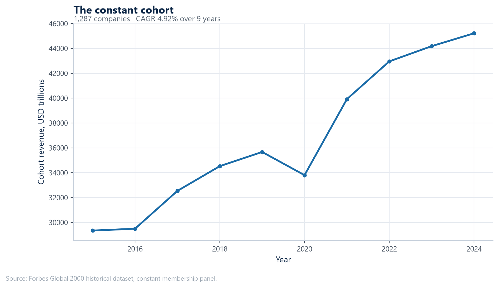
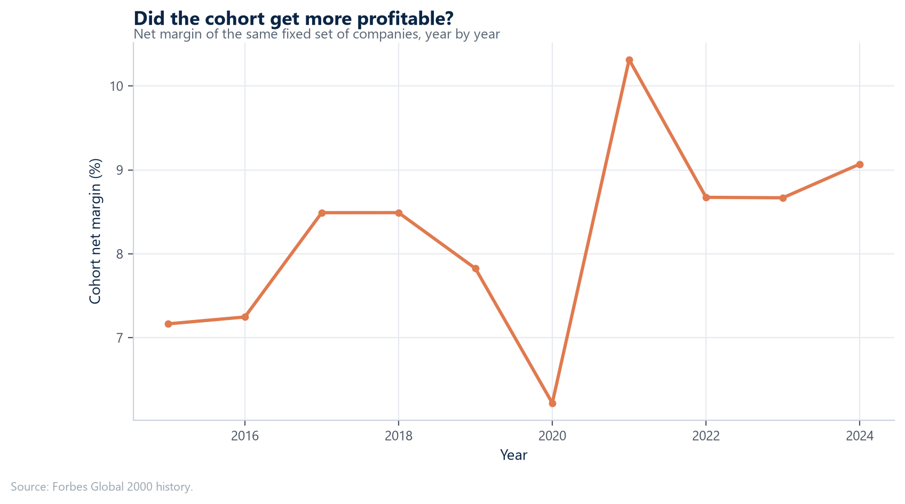
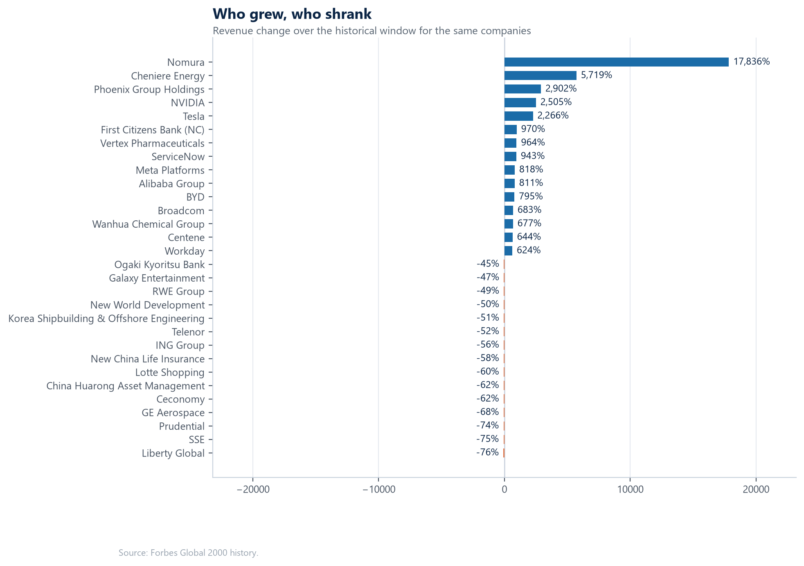
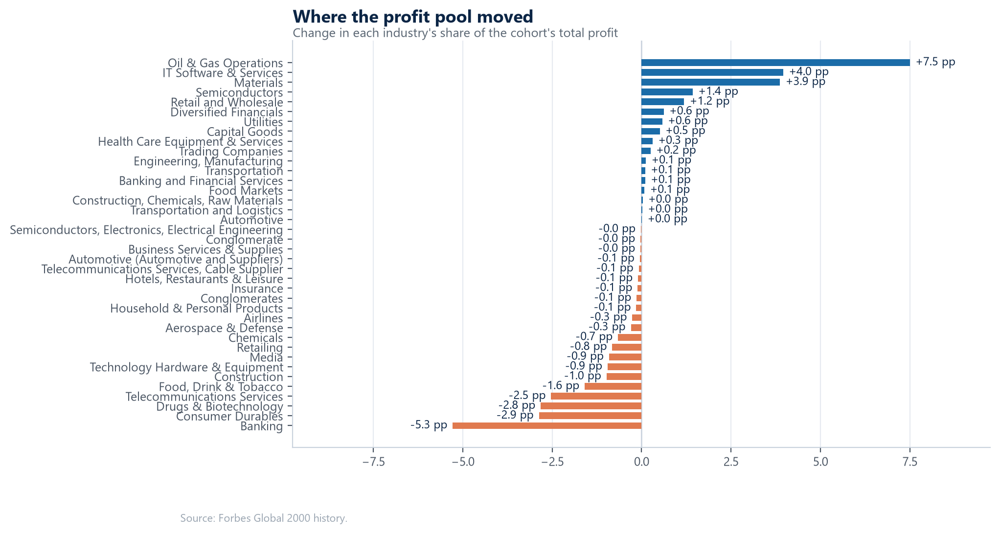
Cohort revenue, year by year
| year | total | n |
|---|---|---|
| 2,015 | $29M | 1,287 |
| 2,016 | $29M | 1,287 |
| 2,017 | $33M | 1,287 |
| 2,018 | $35M | 1,287 |
| 2,019 | $36M | 1,287 |
| 2,020 | $34M | 1,287 |
| 2,021 | $40M | 1,287 |
| 2,022 | $43M | 1,287 |
| 2,023 | $44M | 1,287 |
| 2,024 | $45M | 1,287 |
_Full table: data/time_series__cohort_revenue_series.csv_ (10 rows, 3 columns)._
Cohort margin path
| year | total_rev | total_prof | margin_pct |
|---|---|---|---|
| 2,015 | $29M | $2M | 7.2% |
| 2,016 | $29M | $2M | 7.2% |
| 2,017 | $33M | $3M | 8.5% |
| 2,018 | $35M | $3M | 8.5% |
| 2,019 | $36M | $3M | 7.8% |
| 2,020 | $34M | $2M | 6.2% |
| 2,021 | $40M | $4M | 10.3% |
| 2,022 | $43M | $4M | 8.7% |
| 2,023 | $44M | $4M | 8.7% |
| 2,024 | $45M | $4M | 9.1% |
_Full table: data/time_series__cohort_margin_path.csv_ (10 rows, 4 columns)._
Change in profit share by industry
| industry | revenue_start_musd | revenue_end_musd | revenue_cagr_pct | profit_start_musd | profit_end_musd | profit_cagr_pct | profit_share_end_pct | profit_share_start_pct | profit_share_change_pp |
|---|---|---|---|---|---|---|---|---|---|
| Banking | 3,213,238 | 6,368,090 | 7.9% | 556,927 | 1,033,264 | 7.1% | 21.2% | 26.5% | -5.28 |
| IT Software & Services | 746,087 | 1,981,729 | 11.5% | 108,329 | 443,928 | 17.0% | 9.1% | 5.2% | 3.96 |
| Oil & Gas Operations | 3,110,027 | 5,218,382 | 5.9% | 13,224 | 396,196 | 45.9% | 8.1% | 63.0% | 7.50 |
| Insurance | 2,711,725 | 4,321,187 | 5.3% | 167,022 | 381,597 | 9.6% | 7.8% | 7.9% | -0.110 |
| Diversified Financials | 576,796 | 1,541,770 | 11.5% | 80,067 | 215,726 | 11.6% | 4.4% | 3.8% | 0.620 |
| Technology Hardware & Equipment | 1,195,066 | 1,957,806 | 5.6% | 104,283 | 195,180 | 7.2% | 4.0% | 5.0% | -0.950 |
| Drugs & Biotechnology | 847,116 | 1,604,415 | 7.3% | 139,033 | 184,698 | 3.2% | 3.8% | 6.6% | -2.82 |
| Semiconductors | 238,239 | 733,926 | 13.3% | 45,519 | 174,685 | 16.1% | 3.6% | 2.2% | 1.43 |
| Consumer Durables | 2,513,734 | 3,766,259 | 4.6% | 135,122 | 173,429 | 2.8% | 3.6% | 6.4% | -2.87 |
| Food, Drink & Tobacco | 1,169,927 | 1,816,718 | 5.0% | 105,363 | 166,769 | 5.2% | 3.4% | 5.0% | -1.59 |
| Utilities | 1,212,155 | 1,595,457 | 3.1% | 54,104 | 153,400 | 12.3% | 3.1% | 2.6% | 0.580 |
| Retailing | 1,888,108 | 3,592,417 | 7.4% | 82,229 | 150,557 | 7.0% | 3.1% | 3.9% | -0.820 |
| Transportation | 772,981 | 1,731,991 | 9.4% | 57,838 | 139,028 | 10.2% | 2.9% | 2.8% | 0.100 |
| Business Services & Supplies | 567,432 | 1,182,140 | 8.5% | 57,096 | 130,869 | 9.7% | 2.7% | 2.7% | -0.030 |
| Capital Goods | 814,492 | 1,459,165 | 6.7% | 45,379 | 129,984 | 12.4% | 2.7% | 2.2% | 0.510 |
| Telecommunications Services | 1,293,398 | 1,345,338 | 44.0% | 105,901 | 122,033 | 1.6% | 2.5% | 5.0% | -2.53 |
| Materials | 840,429 | 1,614,392 | 7.5% | -33,064 | 112,186 | — | 2.3% | -1.6% | 3.87 |
| Construction | 1,245,908 | 2,698,471 | 9.0% | 60,924 | 93,362 | 4.9% | 1.9% | 2.9% | -0.980 |
| Household & Personal Products | 358,891 | 652,411 | 6.9% | 36,275 | 77,022 | 8.7% | 1.6% | 1.7% | -0.150 |
| Health Care Equipment & Services | 851,683 | 1,576,466 | 7.1% | 26,127 | 75,380 | 12.5% | 1.6% | 124.0% | 0.310 |
_Full table: data/time_series__profit_pool_migration.csv_ (38 rows, 10 columns)._
Fastest risers among the ranked firms
| company | rank_now | growth_pct |
|---|---|---|
| Nomura | 359 | 17,836.3% |
| Cheniere Energy | 415 | 5,719.3% |
| Phoenix Group Holdings | 896 | 2,902.0% |
| NVIDIA | 47 | 2,504.7% |
| Tesla | 69 | 2,265.9% |
| First Citizens Bank (NC) | 406 | 970.3% |
| Vertex Pharmaceuticals | 960 | 964.0% |
| ServiceNow | 645 | 943.2% |
| Meta Platforms | 20 | 817.6% |
| Alibaba Group | 33 | 811.5% |
| BYD | 87 | 795.2% |
| Broadcom | 68 | 683.5% |
| Wanhua Chemical Group | 519 | 677.2% |
| Centene | 246 | 643.8% |
| Workday | 1,074 | 624.1% |
| Wuchan Zhongda Group | 1,099 | 603.2% |
| Geely Automobile Holdings | 528 | 596.3% |
| St. James's Place | 851 | 595.3% |
| Cigna | 120 | 543.3% |
| Warner Bros. Discovery | 671 | 516.1% |
_Full table: data/time_series__mobility_forbes.csv_ (1,287 rows, 3 columns)._
Where fields are empty, where two sources disagree, how old each dataset is, and the caveats that apply to every number in this pack.
ownership), ai_companies (39% of cells empty, worst column total_funding_usd), ai_labs (34% of cells empty, worst column parent).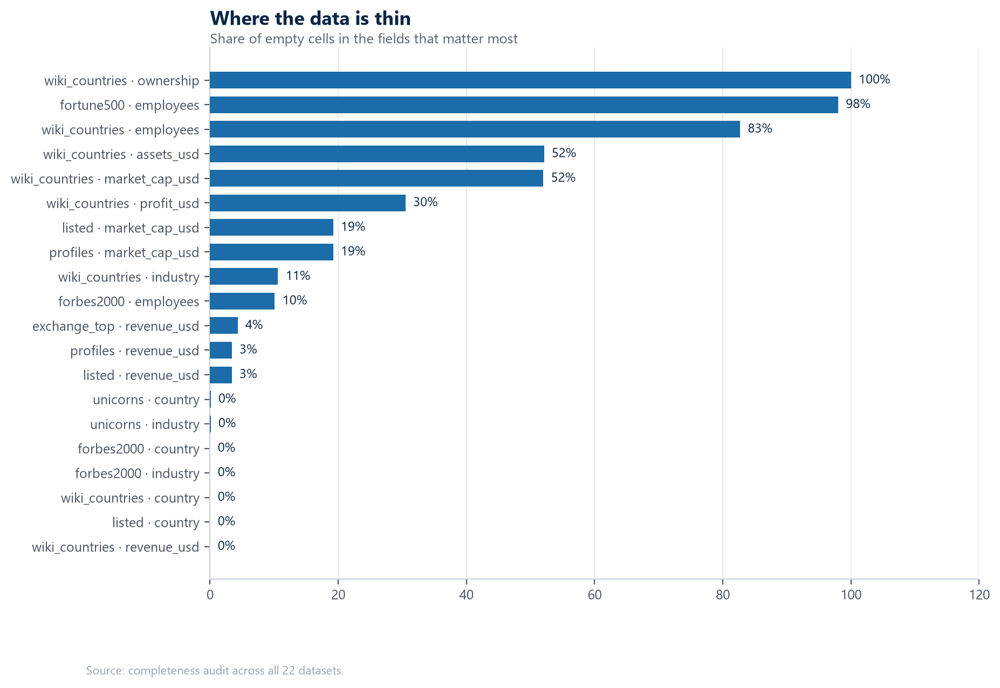
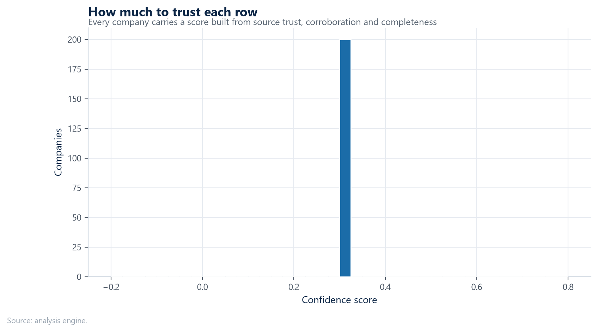
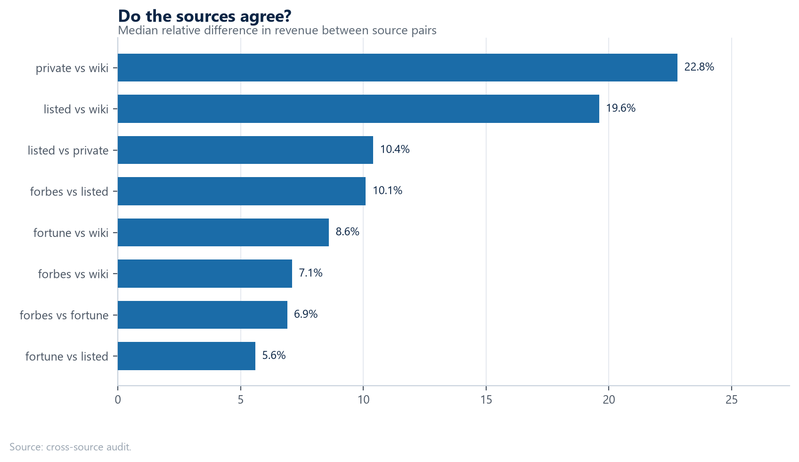
Where the data actually is missing
| dataset | column | rows | missing | missing_pct | distinct |
|---|---|---|---|---|---|
| wiki_countries | ownership | 1,205 | 1,205 | 100.0% | 0.000 |
| fortune500 | employees | 500 | 490.00 | 98.0% | 10.00 |
| wiki_countries | employees | 1,205 | 996.00 | 82.7% | 208.00 |
| wiki_countries | assets_usd | 1,205 | 628.00 | 52.1% | 503.00 |
| wiki_countries | market_cap_usd | 1,205 | 627.00 | 52.0% | 428.00 |
| wiki_countries | profit_usd | 1,205 | 367.00 | 30.5% | 417.00 |
| listed | market_cap_usd | 12,512 | 2,398 | 19.2% | 10,099 |
| profiles | market_cap_usd | 12,512 | 2,398 | 19.2% | 10,099 |
| wiki_countries | industry | 1,205 | 128.00 | 10.6% | 154.00 |
| forbes2000 | employees | 2,000 | 202.00 | 10.1% | 1,612 |
| exchange_top | revenue_usd | 561 | 24.00 | 4.3% | 487.00 |
| profiles | revenue_usd | 12,512 | 425.00 | 3.4% | 7,421 |
| listed | revenue_usd | 12,512 | 425.00 | 3.4% | 7,421 |
| unicorns | country | 1,442 | 2.00 | 10.0% | 55.00 |
| unicorns | industry | 1,442 | 1.00 | 10.0% | 7.00 |
| forbes2000 | country | 2,000 | 0.000 | 0.0% | 61.00 |
| forbes2000 | industry | 2,000 | 0.000 | 0.0% | 38.00 |
| wiki_countries | country | 1,205 | 0.000 | 0.0% | 35.00 |
| listed | country | 12,512 | 0.000 | 0.0% | 79.00 |
| wiki_countries | revenue_usd | 1,205 | 0.000 | 0.0% | 937.00 |
| fortune_profiles | country | 500 | 0.000 | 0.0% | 37.00 |
| forbes2000 | sector | 2,000 | 0.000 | 0.0% | 13.00 |
| fortune_profiles | employees | 500 | 0.000 | 0.0% | 487.00 |
| fortune_profiles | industry | 500 | 0.000 | 0.0% | 63.00 |
| exchange_top | market_cap_usd | 561 | 0.000 | 0.0% | 561.00 |
_Full table: data/data_quality__missingness_key.csv_ (34 rows, 6 columns)._
How the sources disagree about the same company
| source_a | source_b | pairs | median_abs_pct_diff | mean_abs_pct_diff | p90_abs_pct_diff | share_within_10pct | share_within_25pct | share_over_2x | pearson_r | note |
|---|---|---|---|---|---|---|---|---|---|---|
| forbes | fortune | 326.00 | 6.90 | 12.00 | 23.80 | 66.90 | 90.50 | 3.40 | 0.982 | — |
| forbes | listed | 1,453 | 10.10 | 23.00 | 60.90 | 49.60 | 74.20 | 8.70 | 0.958 | — |
| forbes | wiki | 549.00 | 7.10 | 17.60 | 51.10 | 55.90 | 76.70 | 5.60 | 0.989 | — |
| fortune | listed | 307.00 | 5.60 | 21.00 | 63.80 | 63.20 | 75.20 | 9.40 | 0.954 | — |
| fortune | private | 1.00 | — | — | — | — | — | — | — | too few matches |
| fortune | wiki | 229.00 | 8.60 | 18.90 | 55.30 | 53.70 | 74.70 | 7.90 | 0.944 | — |
| listed | private | 5.00 | 10.40 | 38.10 | 92.80 | 40.00 | 60.00 | 20.00 | 0.989 | — |
| listed | wiki | 591.00 | 19.60 | 31.20 | 70.50 | 35.00 | 55.50 | 11.50 | 0.945 | — |
| private | wiki | 29.00 | 22.80 | 27.00 | 45.90 | 20.70 | 51.70 | 3.40 | 0.982 | — |
_Full table: data/data_quality__cross_source_disagreement.csv_ (9 rows, 11 columns)._
Vintage of every source
| dataset | min_year | max_year | mode_year |
|---|---|---|---|
| Forbes Global 2000 | 2,025 | 2,025 | 2,025 |
| Listed universe (SEC) | 2,001 | 2,026 | 2,026 |
| Fortune profiles (market value) | 2,026 | 2,026 | 2,026 |
_Full table: data/data_quality__data_vintages.csv_ (3 rows, 4 columns)._
The directory behind the aggregates. Every company the reconciliation could name, with whatever is actually known about each one: size, sector, owner, country, and a way through to the company itself.
| Companies in the directory | 15,175 |
| With an official website | 2,021 |
| With a Wikipedia page | 7,695 |
| With a one-line description | 8,293 |
| With a revenue figure | 13,239 |
| With a market value | 10,730 |
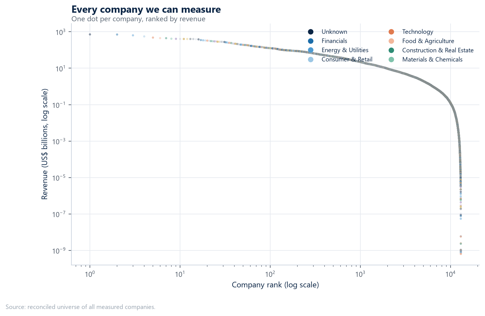
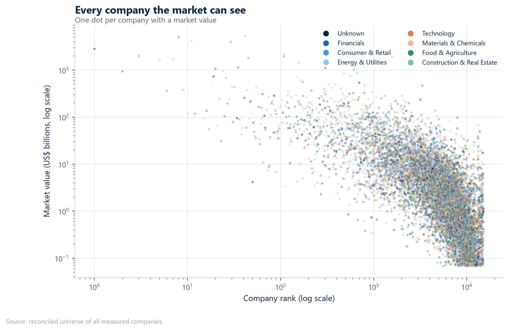
The largest companies in the directory
| company | country | sector | ownership | revenue_usd | market_cap_usd |
|---|---|---|---|---|---|
| AMAZON.COM, INC. | United States | — | public | $717B | $2.8T |
| Walmart Inc. | United States | Consumer & Retail | public | $706B | $942B |
| Amazon | United States | Consumer & Retail | public | $638B | $2.0T |
| State Grid | — | — | state | $555B | — |
| Saudi Arabian Oil Company (Saudi Aramco) | Saudi Arabia | Energy & Utilities | public | $480B | $1.7T |
| UnitedHealth Group Incorporated | United States | — | public | $448B | $365B |
| Saudi Aramco | Saudi Arabia | — | public | $446B | $1.7T |
| Apple Inc. | United States | Technology | public | $416B | $5.0T |
| UnitedHealth Group | United States | Financials | public | $410B | $383B |
| McKESSON CORPORATION | United States | Healthcare | public | $403B | $118B |
| Alphabet Inc. | United States | Technology | public | $403B | $4.2T |
| CVS HEALTH CORPORATION | United States | Consumer & Retail | public | $402B | $119B |
| China National Petroleum | — | — | state | $402B | — |
| Vitol | World (private) | — | unknown | $400B | — |
| Sinopec | China | Energy & Utilities | public | $390B | $95B |
| PetroChina | China | Energy & Utilities | public | $384B | $136B |
| Volkswagen Group | Germany | Consumer & Retail | public | $351B | $56B |
| ExxonMobil | United States | Energy & Utilities | public | $340B | $470B |
| Exxon Mobil Corporation | United States | — | public | $332B | $733B |
| Samsung | South Korea | — | public | $326B | $1.1T |
| Cencora, Inc. | United States | Healthcare | public | $321B | $65B |
| Toyota Motor | Japan | Consumer & Retail | public | $309B | $244B |
| China State Construction Engineering | China | Construction & Real Estate | public | $303B | $31B |
| JPMorgan Chase | United States | — | public | $298B | $966B |
| Foxconn (Hon Hai Precision Industry) | Taiwan | — | public | $297B | $104B |
_Full table: data/companies__company_directory.csv_ (15,175 rows, 29 columns)._
Each row is one source file, what it measures, who publishes it and how much weight it was given.
Dataset registry
| Dataset | Kind | Trust | Publisher | File | Notes |
|---|---|---|---|---|---|
| Forbes Global 2000 2025 | financials | reported | Forbes | global2000_2025.csv | 2,000 largest firms by revenue. Revenue is a Forbes estimate in USD. |
| Forbes Global 2000 10-year history | financials | reported | Forbes | global2000_2025_history.csv | Long-format revenue/profit history, approx. 10 years. |
| Fortune Global 500 2025 | financials | reported | Fortune | fortune_g500_2025.csv | US-centric list; 500 firms ranked by revenue, USD millions. |
| Fortune ownership labels (manual) | reference | reported | manual correction | fortune_labels.csv | Corrects Fortune's company_type field, which mislabels state-owned firms as Private. |
| Companies master (Forbes + Fortune) | financials | reported | derived | companies_master.csv | Union of Forbes 2000 and Fortune 500 with manual ownership labels. |
| Industry taxonomy (13 sectors / 30 industries) | reference | reported | derived | industry_taxonomy.csv | Sector rollup of the Forbes 2000. |
| Country metadata (ISO3, region) | reference | reference | derived | country_meta.csv | 217 countries, 6 regions. |
| Country GDP 2024 | reference | authoritative | World Bank | country_gdp_2024.csv | Nominal GDP in current USD, 204 countries. |
| World macro series | reference | authoritative | World Bank | world_macro.csv | World aggregates: GDP, employment by sector, labour force, population. |
| Forbes America's Top Private Companies | financials | reported | Forbes | private_us_2025.csv | US only. Revenue reported by Forbes. |
| Forbes Cloud 100 + Next Billion | valuation | mark | Forbes | startups_2025.csv | Private valuations. Cloud 100 + Next Billion Dollar Startups. |
| Listed company universe | financials | authoritative/estimate | SEC XBRL + CompaniesMarketCap | listed_universe.csv | 12,512 listed firms. SEC revenue is audited; CMC revenue is an estimate. |
| Company profiles + descriptions | reference | mixed | Forbes + Wikipedia | company_profiles.csv | 20,663 profiles. Descriptions: Forbes (editorial) + Wikipedia (CC BY-SA). |
| Global stock exchanges | valuation | reported | CompaniesMarketCap | exchanges.csv | 60 exchanges. Market cap totals are coverage-limited, not world totals. |
| Top companies per exchange | valuation | reported | CompaniesMarketCap | exchange_top_companies.csv | Top ~10 firms per exchange. |
| Companies per exchange | valuation | reported | CompaniesMarketCap | exchange_companies.csv | 9,780 firm-exchange rows. ADRs mapped to home exchange. |
| Ticker suffix to exchange map | reference | reference | derived | exchanges_lookup.csv | Maps ticker suffixes to exchanges. |
| Unicorn company list (CB Insights) | valuation | mark | CB Insights | unicorns_cbinsights.csv | 1,442 private companies with $1B+ valuations. Paper marks, not prices. |
| Startups global (CB Insights + Forbes) | valuation | mark | CB Insights / Forbes | startups_global.csv | 1,479 rows, merged and de-duplicated. |
| AI model builders | reference | mixed | compiled | ai_companies.csv | 173 companies across 15 modalities. |
| AI labs | reference | mixed | compiled | ai_labs.csv | 99 labs. Open/closed weight status, HF org, valuation. |
| Hugging Face org stats | reference | reported | Hugging Face | hf_stats.csv | Model counts and top-model downloads per org. |
Every chart is written to charts/ next to this document.
Charts
| # | Title | Subtitle | File |
|---|---|---|---|
| 01 | The twenty largest companies on earth | Revenue, 2025 — Forbes Global 2000 | charts/01_top20_revenue.png |
| 02 | How many firms clear each revenue bar | Cumulative count above a revenue threshold | charts/02_revenue_thresholds.png |
| 03 | The rank-size curve | Revenue against rank, both on a log scale | charts/03_rank_size_zipf.png |
| 04 | What Forbes' list leaves out | Largest measured companies absent from the Global 2000 | charts/04_truncation_gap.png |
| 05 | Where the world's corporate revenue is booked | Top 20 countries by measured revenue | charts/05_top_countries.png |
| 06 | Corporate weight against economic weight | Revenue share against GDP share | charts/06_revenue_vs_gdp.png |
| 07 | Six regions, one world | Measured revenue by region | charts/07_regions.png |
| 08 | What mixing in the other lists changes | Forbes-only versus reconciled regional shares | charts/08_region_compare.png |
| 09 | Revenue and profit by sector | Where the money comes from, and where it stays | charts/09_sector_revenue_profit.png |
| 10 | Median net margin by sector | The middle firm in each sector | charts/10_sector_margin.png |
| 11 | How wide is the margin spread inside each sector? | 10th to 90th percentile net margin | charts/11_margin_dispersion.png |
| 12 | Every sector is margin-driven or turnover-driven | Net margin against asset turnover | charts/12_roa_decomposition.png |
| 13 | Concentration inside each sector | Herfindahl index on revenue | charts/13_sector_concentration.png |
| 14 | Who owns the world's corporate revenue? | Revenue by ownership type | charts/14_ownership_mix.png |
| 15 | The invisible giants | Measured companies missing from the Global 2000 | charts/15_invisible_giants.png |
| 16 | The true top 100 on earth | Re-ranked from the reconciled universe | charts/16_true_top100.png |
| 17 | Median net margin, owner by owner | State, listed, private and mutual businesses | charts/17_margin_by_ownership.png |
| 18 | The twenty most valuable listed companies | Market capitalisation | charts/18_top_listed.png |
| 19 | What the market pays for each unit of revenue | Market capitalisation ÷ revenue, by sector | charts/19_multiples_by_sector.png |
| 20 | Profit and market value disagree about what matters | Profit share minus market-value share, by sector | charts/20_profit_vs_mcap.png |
| 21 | How deep is each equity market? | Market capitalisation as a multiple of GDP | charts/21_financial_depth.png |
| 22 | The world's exchanges by market value | Aggregate market capitalisation per venue | charts/22_exchanges.png |
| 23 | Where the private giants are | Unicorn paper valuation by country | charts/23_unicorns_country.png |
| 24 | Which industries the private money went into | Unicorn paper valuation by industry | charts/24_unicorns_industry.png |
| 25 | The unicorn wave | Companies crossing $1B each year | charts/25_unicorn_wave.png |
| 26 | Real revenue with no listed share | Measured revenue, no public equity | charts/26_unlisted_top.png |
| 27 | The AI builders by modality | Model builders grouped by what they build | charts/27_ai_modality.png |
| 28 | The constant cohort | Revenue of a fixed set of companies over time | charts/28_cohort_revenue.png |
| 29 | Did the cohort get more profitable? | Net margin of a fixed cohort | charts/29_cohort_margin.png |
| 30 | Who grew, who shrank | Revenue change for the same companies over time | charts/30_rank_mobility.png |
| 31 | Where the profit pool moved | Change in industry share of total profit | charts/31_profit_pool_migration.png |
| 32 | Where the data is thin | Share of empty cells in key fields | charts/32_missingness.png |
| 33 | How much to trust each row | Distribution of the confidence score | charts/33_confidence.png |
| 34 | Do the sources agree? | Median revenue disagreement between source pairs | charts/34_cross_source.png |
| 35 | Every company we can measure | One dot per company, ranked by revenue | charts/35_every_company_we_can_measure.png |
| 36 | Every company the market can see | One dot per company with a market value | charts/36_every_company_the_market_can_see.png |
Every table the engine produced, written as CSV.
Tables
| Module | Table | Rows | Columns | File |
|---|---|---|---|---|
| scale | top_beyond_forbes | 25 | company, country, revenue_musd, sector | data/scale__top_beyond_forbes.csv |
| scale | thresholds | 6 | threshold, firms | data/scale__thresholds.csv |
| scale | top20 | 20 | company, country, revenue_usd, profit_usd, market_cap_usd | data/scale__top20.csv |
| scale | rank_size | 2,000 | rank, company, country, revenue_usd | data/scale__rank_size.csv |
| geography | country_forbes | 61 | country_iso3, companies, revenue_usd, profit_usd, market_cap_usd, employees, country, region, profit_margin, revenue_per_employee... | data/geography__country_forbes.csv |
| geography | country_mixed | 84 | country_iso3, companies, revenue_usd, profit_usd, market_cap_usd, employees, country, region, profit_margin, revenue_per_employee... | data/geography__country_mixed.csv |
| geography | regions_forbes | 6 | region, countries, companies, revenue_usd, profit_usd, market_cap_usd, employees, revenue_share, profit_margin, revenue_per_employee... | data/geography__regions_forbes.csv |
| geography | regions_mixed | 6 | region, countries, companies, revenue_usd, profit_usd, market_cap_usd, employees, revenue_share, profit_margin, revenue_per_employee... | data/geography__regions_mixed.csv |
| geography | map | 84 | country_iso3, country, region, companies, revenue_musd, profit_musd, market_cap_musd, employees, profit_margin | data/geography__map.csv |
| geography | over_under | 55 | country, companies, revenue_usd, gdp_usd, revenue_share, gdp_share, index_vs_gdp | data/geography__over_under.csv |
| industry | sectors | 13 | sector, companies, revenue_usd, profit_usd, assets_usd, market_cap_usd, employees, profit_margin, roa, asset_turnover... | data/industry__sectors.csv |
| industry | industries | 30 | industry_canon, companies, revenue_usd, profit_usd, assets_usd, market_cap_usd, employees, profit_margin, roa, asset_turnover... | data/industry__industries.csv |
| industry | margin_dispersion | 13 | sector, firms, mean, median, p10, p90, std, iqr, cv, loss_makers... | data/industry__margin_dispersion.csv |
| industry | valuation_by_sector | 13 | sector, firms, median_ps, revenue, market_cap | data/industry__valuation_by_sector.csv |
| industry | sector_concentration | 13 | sector, firms, hhi, top5_share, gini | data/industry__sector_concentration.csv |
| ownership | ownership_forbes | 1 | ownership, companies, revenue_usd, profit_usd, market_cap_usd, employees, profit_margin, revenue_per_employee, revenue_share, profit_share | data/ownership__ownership_forbes.csv |
| ownership | ownership_mixed | 6 | ownership, companies, revenue_usd, profit_usd, market_cap_usd, employees, profit_margin, revenue_per_employee, revenue_share, profit_share | data/ownership__ownership_mixed.csv |
| ownership | invisible_giants | 200 | company_key, company, source, source_group, list_name, rank_in_source, country, country_iso3, region, city... | data/ownership__invisible_giants.csv |
| ownership | invisible_by_country | 82 | country, firms, revenue_usd | data/ownership__invisible_by_country.csv |
| ownership | true_top100 | 100 | company_key, company, source, source_group, list_name, rank_in_source, country, country_iso3, region, city... | data/ownership__true_top100.csv |
| ownership | margin_tests | 3 | comparison, n_a, n_b, mean_a, mean_b, median_a, median_b, diff, ci_low, ci_high... | data/ownership__margin_tests.csv |
| capital | exchanges | 60 | exchange, exchange_country, city, companies, total_market_cap_usd, top10_market_cap_usd, top_company, top_company_mcap, top10_share, avg_company_cap... | data/capital__exchanges.csv |
| capital | multiples_by_sector | 1 | sector, firms, median_ps, p25_ps, p75_ps, total_market_cap, total_revenue | data/capital__multiples_by_sector.csv |
| capital | profit_pool | 13 | sector, revenue, profit, market_cap, profit_share, market_cap_share, profit_minus_mcap_pp, market_cap_to_profit | data/capital__profit_pool.csv |
| capital | financial_depth | 74 | country, market_cap, companies, iso3, gdp, mcap_to_gdp | data/capital__financial_depth.csv |
| capital | top_listed | 100 | company, country, sector, market_cap_usd, revenue_usd, revenue_basis | data/capital__top_listed.csv |
| private_capital | unicorns_by_country | 55 | country, region, companies, valuation_usd | data/private_capital__unicorns_by_country.csv |
| private_capital | unicorns_by_industry | 7 | industry, companies, valuation_usd | data/private_capital__unicorns_by_industry.csv |
| private_capital | unicorns_top | 20 | company, country, industry, valuation_busd, date_joined | data/private_capital__unicorns_top.csv |
| private_capital | private_us | 60 | company, industry, revenue_usd, employees | data/private_capital__private_us.csv |
| private_capital | unlisted_top | 100 | company, country, ownership, sector, revenue_usd | data/private_capital__unlisted_top.csv |
| private_capital | unicorns_by_year | 16 | year, companies, valuation_usd | data/private_capital__unicorns_by_year.csv |
| private_capital | ai_by_modality | 59 | modality, companies | data/private_capital__ai_by_modality.csv |
| time_series | cohort_revenue_series | 10 | year, total, n | data/time_series__cohort_revenue_series.csv |
| time_series | cohort_profit_series | 10 | year, total, n | data/time_series__cohort_profit_series.csv |
| time_series | cohort_margin_path | 10 | year, total_rev, total_prof, margin_pct | data/time_series__cohort_margin_path.csv |
| time_series | profit_pool_migration | 38 | industry, revenue_start_musd, revenue_end_musd, revenue_cagr_pct, profit_start_musd, profit_end_musd, profit_cagr_pct, profit_share_end_pct, profit_share_start_pct, profit_share_change_pp | data/time_series__profit_pool_migration.csv |
| time_series | rank_mobility | 1,287 | company, revenue_start_musd, revenue_end_musd, growth_pct | data/time_series__rank_mobility.csv |
| time_series | mobility_forbes | 1,287 | company, rank_now, growth_pct | data/time_series__mobility_forbes.csv |
| data_quality | missingness | 186 | dataset, column, rows, missing, missing_pct, distinct | data/data_quality__missingness.csv |
| data_quality | missingness_key | 34 | dataset, column, rows, missing, missing_pct, distinct | data/data_quality__missingness_key.csv |
| data_quality | cross_source_disagreement | 9 | source_a, source_b, pairs, median_abs_pct_diff, mean_abs_pct_diff, p90_abs_pct_diff, share_within_10pct, share_within_25pct, share_over_2x, pearson_r... | data/data_quality__cross_source_disagreement.csv |
| data_quality | confidence | 200 | company, revenue_basis, n_sources, confidence_score | data/data_quality__confidence.csv |
| data_quality | data_vintages | 3 | dataset, min_year, max_year, mode_year | data/data_quality__data_vintages.csv |
| companies | company_directory | 15,175 | company, country, country_iso3, region, sector, industry_canon, ownership, source, list_name, n_sources... | data/companies__company_directory.csv |
| companies | company_presence | 15,175 | company, country_iso3, sector, ownership, source, revenue_usd, market_cap_usd, employees, rank_by_revenue | data/companies__company_presence.csv |
Generated by data_analysis/build_report.py.